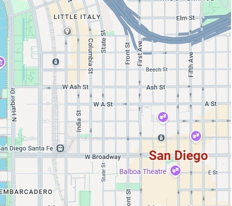

Voted The Best Restaurant in 2026
Z’s Restaurant is a modern Italian restaurant with a global twist,
Fusing traditional tastes with bold, modern influences. Our menu
features distinguished dishes like the Prime Reserve Filet, Truffle
Mushroom Fettuccine, highlighted by craft cocktails such as the Velvet
Martini, The Royal Reserve, and Peach Bellini. We also offer a wide
selection of wines, champagnes, and spirit-free cocktails for every
occasion.
Lamb - Organic Raised Lamb
Lobster - Flown in from the east coast
Steak - Organic Raised Cattle
Pasta - Traditional Style

Directions: I-5, Exit 125 "First Street", South on "First Street" for 1
mile, Left on Acolade Drive for 1 mile.